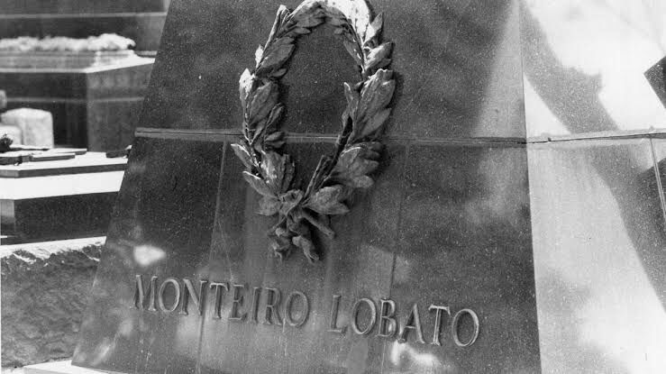

O propósito deste Website sobre Monteiro Lobato é informar diversas coisas sobre sua vida e carreira com um foco mais especial no livro "Negrinha" que diferente de suas obras sobre o Sitio do Picapau Amarelo é voltada a contos com tematicas mais adultas como Tragédia, Preconceito e até suspense retratando muita das suas ideias e sua capacidade de criar historias que verdadeiramente instigam a atenção do leitor.
Esperamos que ao final do site o leitor saia bem informado sobre sua vida, obras, influência seus pensamentos, caso isso tenha despertado seu interesse é possivel ler o conto Negrinha em nosso site.
Sua Vida
Monteiro Lobato (1882-1948) foi um escritor e editor brasileiro. "O Sítio do Pica-pau Amarelo" é sua obra
de maior destaque na literatura infantil. Criou a "Editora Monteiro Lobato" e mais tarde a "Companhia
Editora Nacional". Foi um dos primeiros autores de literatura infantil de nosso país e de toda América
Latina.
Monteiro Lobato nasceu em Taubaté, São Paulo, no dia 18 de abril de 1882. Era filho de José Bento Marcondes
Lobato e Olímpia Monteiro Lobato. Alfabetizado pela mãe, logo despertou o gosto pela leitura, lendo todos os
livros infantis da biblioteca de seu avô o Visconde de Tremembé.
Monteiro Lobato fez seus primeiros estudos em sua cidade natal. Em 1896, com 14 anos, foi estudar em São
Paulo no Instituto de Ciências e Letras. Em 1898 ficou órfão de pai e logo em seguida, perdeu sua mãe,
ficando aos cuidados do avô.
A principio, Lobato havia sido registrado com o nome de José Renato Monteiro Lobato, mas após a morte do
pai, em 13 de junho de 1898, queria usar a bengala que pertencera ao pai e tinha as iniciais J.B.M.L.
gravadas no topo do castão. Por isso, resolveu mudar de nome para que suas iniciais ficassem iguais as do
pai e desde então passou a se chamar José Bento Monteiro Lobato.
Ao lado da literatura infantil, Monteiro Lobato também deixou extensa obra voltada para o público adulto.
Retratou os vilarejos decadentes e a população do Vale do Paraíba, quando da crise do café. Situa-se entre
os autores do Pré-Modernismo, período que precedeu a Semana de Arte Moderna.
Ao lado da literatura infantil, Monteiro Lobato também deixou extensa obra voltada para o público adulto.
Retratou os vilarejos decadentes e a população do Vale do Paraíba, quando da crise do café. Situa-se entre
os autores do Pré-Modernismo, período que precedeu a Semana de Arte Moderna.
Lobato foi também jornalista, tradutor e empresário. Fundou a Companhia Petróleo do Brasil, à qual se
dedicou por dez anos.
Lobato, resolveu mudar de nome, pois queria usar a bengala de seu pai, que havia falecido em 1898. A
bengala tinha as iniciais J B M L gravadas no topo do castão. Assim, mudou de nome e passou a se chamar José
Bento, para que suas iniciais ficassem iguais às do pai.
considerado o pai da literatura infantil no Brasil, morreu de derrame, no dia 4 de julho de 1948, em São
Paulo
Cronologia
1882
1900
1908
1918
1918
1927
1936
1939
1941
1948
1882
Em 18 de Abril de 1882 Nascia em Taubaté, SP, José Bento Renato Monteiro Lobato e em sua homenagem,
esse dia é também comemorado “O dia Nacional do Livro Infantil”
1900
Ingressa na Faculdade de Direito de São Paulo formando-se em 1904 ano em que regressou a Taubaté
1908
Casou-se com Maria Pureza da Natividade com quem teve quatro filhos.
1918
Publica seu primeiro livro, "O Saci-Pererê -
Resultado de um Inquérito". Escreve o polêmico
artigo "Paranóia ou Mistificação", em que critica as
inovações modernistas na pintura de Anita Malfatti.
1918
Também em 1918 Lobato lançaria o livro Urupês categorizada como Literatura para Adultos é considerada
sua Obra Prima, ela aborda um regionalismo critico e apresenta um de seus personagens mais famosos
Jeca Tatu.
1927
É nomeado adido comercial no Consulado do
Brasil em Nova York, para onde se muda com a
família.
1936
Saí o Livro O escândalo do Petróleo no qual Lobato demonstra suas ideias politicas e economicas em
relação ao investimento nesse recurso natural tendo possivelmente até influência na criação da
Petrobras anos depois.
1939
Nesse ano é publicado o livro infantil "O Picapau Amarelo" aonde ele reune diversos contos com os
personagens mais conhecidos de suas obras infantis junto com de outras fábulas.
1941
Após escrevar uma Carta ao Ditador Getúlio Vargas criticando o Estado Novo sobre a questão do
Petroléo , após tentar evadir-se do país foi declarado sua prisão preventiva no dia 18 de março de
1941 sendo solto apenas em 20 de Junho do mesmo ano.

1948
Sendo considerado o pai da literatura infantil no Brasil, morreu de derrame, no dia 4 de julho de
1948, em São Paulo.
O conto Negrinha, de Monteiro Lobato, é narrado em terceira pessoa, e impregnado de uma carga emocional muito
forte. O conto se mostra atual ao denunciar a violência contra a criança, notadamente a negra. Negrinha é um
livro de contos ficcional escrito por Monteiro Lobato, publicado em 1920. O livro era constituído na primeira
edição apenas pelos contos Negrinha, Fitas da Vida, O drama da geada, O Bugio moqueado, O jardineiro Timóteo e
O colocador de pronomes.
Muitos consideram que neste livro estão os melhores contos escritos por Lobato. Sem dúvida são os mais
emotivos e que mais agradaram ao público. Alguns contos foram escritos antes de sua viagem aos Estados Unidos,
outros depois do retorno. O livro contém verdadeiras preciosidades no tratamento do idioma e os personagens
são mais urbanos e mais mundanos que os dos livros anteriores. “Aqui encontramos um painel que vai da farsa à
tragédia, do sarcasmo à compaixão, passando pelo drama pungente da filha de uma ex-escrava.”
Outras Obras
Cerca de metade das histórias criadas por Lobato foram dirigidas ao público infantil. As aventuras passadas
no sítio do Picapau Amarelo atravessaram gerações e marcaram o imaginário coletivo. Muitas dessas produções
literárias do autor foram adaptadas para o cinema, o teatro e a televisão.
Sobre da Obra
Em O picapau amarelo os personagens do mundo real (como dona Benta, Narizinho, Pedrinho e a avó),
convivem com criaturas fantásticas como princesas, fadas e personagens importantes da nossa cultura.
Sobre a Obra
O primeiro livro infantil publicado por Monteiro Lobato foi A menina do narizinho arrebitado,
lançado em 1921, que alcançou a impressionante marca de 50 mil livros vendidos. Depois dele vieram
outros títulos infantis que, em 1931, foram reunidos num único livro.
Sobre a Obra
A obra infantil apresenta para as crianças um dos mais importantes personagens da cultura nacional:
o saci pererê. O menino negro de uma perna só, cheio de energia, provoca a curiosidade especialmente
em Pedrinho, que segue as pistas dadas pelo tio Barnabé para conhecer a criatura mítica no meio da
floresta.
Sobre a Obra
A obra infantil mistura ficção e realidade e apresenta o conflito para as crianças através do olhar
de Emília. A jovem boneca de pano deseja encontrar a casa das chaves para poder desligar a chave da
guerra e assim salvar uma série de pessoas.
Sobre a Obra
Tia Nastácia era uma empregada negra que vivia no sítio do Picapau amarelo e que sempre tinha muita
sabedoria popular para partilhar. O livro, publicado em 1937, reúne 43 contos que são narrados por
ela
Sobre a Obra
Monteiro Lobato relembra uma série de histórias clássicas no seu livro de fábulas, onde faz uma
releitura dos grandes clássicos infantis. O escritor brasileiro retoma, por exemplo, as fábulas de
Esopo e La Fontaine recontando e adaptando para o público brasileiro as ricas fábulas.
Sobre a Obra
Caçadas de Pedrinho conta as aventuras do menino corajoso na região do sítio do Picapau amarelo.
Depois de encontrar pegadas na região, o jovem garoto convoca os amigos para irem à procura do
animal feroz que anda às voltas do sítio.
Sobre a Obra
A obra Ideias de Jeca Tatu reúne 35 textos - a maior parte deles publicados em jornais e revistas -
e tem como traço comum o sentimento nacionalista que movia o escritor. Em muitos desses ensaios
vemos um Monteiro Lobato provocador, polêmico, que contestava, por exemplo, a modernização da arte
brasileira.
Sobre a Obra
Nessa obra infantil centrada na boneca de pano Emília lemos uma série de reflexões filosóficas que
são adaptadas para o vocabulário infantil.